| |
SFMM Spring 2014
All right. So I know that its been a while since our last Six Flags Magic Mountain update. And since then, A BOATLOAD OF STUFF has happened!!! So here's a MASSIVE update featuring two different visits that will catch up with all that has been going on at Six Flags Magic Mountain. And to start us out, here's some cool art from the Goliath Break Room (too bad it smells like rat sh*t).
Oh wow. Lex Luthor is broken down again. What a shock *rolls eyes*.
"Hey. It looks like my former job working at the Rock Wall was useful for something after all." =)
"TRY AND BEAT ME MOTHERF*CKERS!!!!"
 "Hey. This Ipod Shuffle I won from doing my old job is worth more than a weeks pay from the actual job."
"Hey. This Ipod Shuffle I won from doing my old job is worth more than a weeks pay from the actual job."
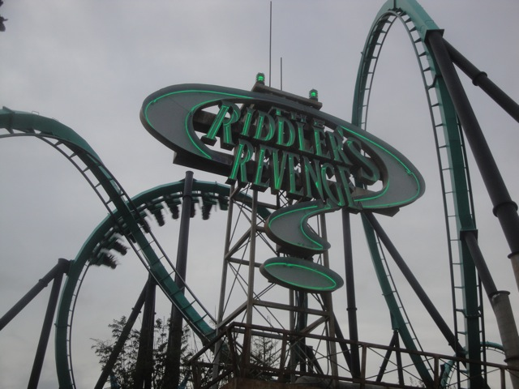
Well, in more good news. Riddlers Revenge was HAULING ASS today!!! Wish it always ran this forcefully.
 Hooray!!! X2 has FINALLY reopened!!! About damn time as well. And now, here's something you probably didn't notice when X2 reopened up. Look at the ground. Remember seeing that "DO NOT ENTER" red line there before? Also, do you notice the flaps preventing you from heading out onto the track? Of course not. Why would you? Its no big deal and doesn't effect X2 in any way. So why did they do this and why did I notice this and bring it up? Because I was working at X2 one night last summer when I witnessed the group of LOMBOTOMIZED NEANDERTHALS (No wait, I take that back. It's an insult to Neanderthals to be compared to this group of brain-dead subhumans) that caused Six Flags to paint that there. Because there are people STUPID!!! Believe it or not, they are. So while most people will completely ignore this or at most, see this as a simple cover-your-ass legal move (which it totally is, even though it shouldn't be needed and this would be a perfect time for Darwinism to do its job), I see it (and I'm gonna notice this) and want to weep for humanity at just how low this species has sunk.
Hooray!!! X2 has FINALLY reopened!!! About damn time as well. And now, here's something you probably didn't notice when X2 reopened up. Look at the ground. Remember seeing that "DO NOT ENTER" red line there before? Also, do you notice the flaps preventing you from heading out onto the track? Of course not. Why would you? Its no big deal and doesn't effect X2 in any way. So why did they do this and why did I notice this and bring it up? Because I was working at X2 one night last summer when I witnessed the group of LOMBOTOMIZED NEANDERTHALS (No wait, I take that back. It's an insult to Neanderthals to be compared to this group of brain-dead subhumans) that caused Six Flags to paint that there. Because there are people STUPID!!! Believe it or not, they are. So while most people will completely ignore this or at most, see this as a simple cover-your-ass legal move (which it totally is, even though it shouldn't be needed and this would be a perfect time for Darwinism to do its job), I see it (and I'm gonna notice this) and want to weep for humanity at just how low this species has sunk.
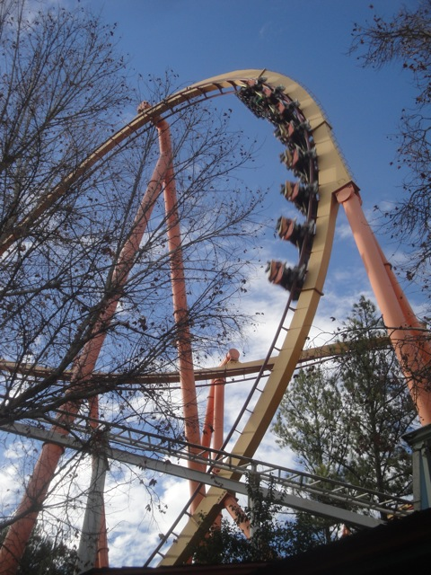
Mmm. Pretzal Loop *drools*.
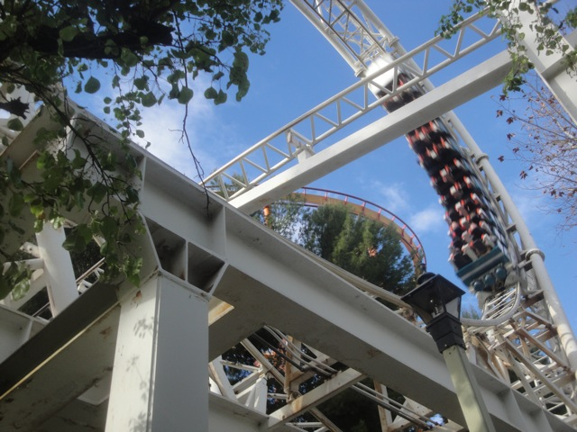
Ugh. It looks like Revolution is running really horribly today. Oh wait, it ALWAYS runs like that. =(
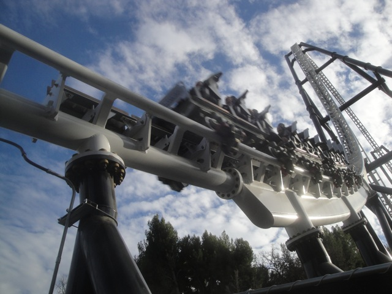
All right. Time to get some Full Throttle shots.
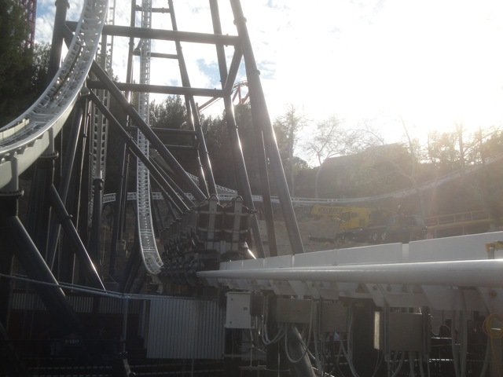
HOLY SH*T!!! Full Throttle rolled back!!! (I really wish I was shooting video during this dispatch instead of taking stills, and yes, I had my video camera with me that day).
Ooh. Full Throttle Train technical parts.
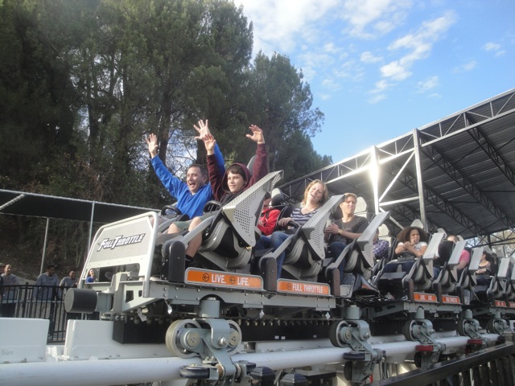
EVERYBODY POSE!!!
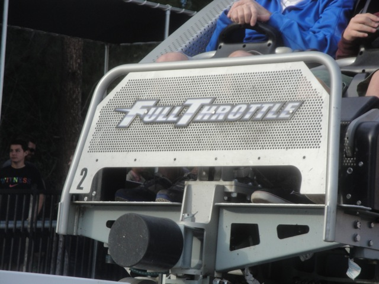
Ooh. Full Throttle Logo on the train.
Can I ride the teacups vertically like that?
"We noticed that children are having fun on this attraction. It must be bulldozed immidietly." =)
Well, the Loony Tooter is now gone (one of the few rides at SFMM I never rode. Because why would I?) and construction for the new kiddy coaster has begun (and by construction, I mean Six Flags has cleared dirt. The next step won't be taken for another few months).
 Love that the Slingshot employees still recognize us and can immidetly get us on for free. =)
Love that the Slingshot employees still recognize us and can immidetly get us on for free. =)
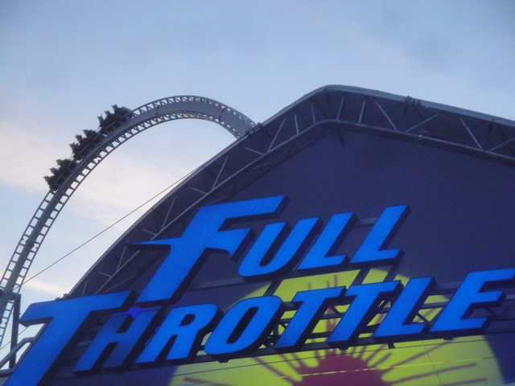
Ah, what the hell. The line is short. Lets take a ride on Full Throttle.
Yep. If you can't see from the bad photo, Full Throttle has seat belts now. Because HOORAY FOR MORE COVER-YOUR-ASS MEASURES!!! Thank you for all the many wonderful gifts you've given Six Flags New Texas Giant ride operators. Do they effect the ride? Not at all. You don't even notice them at all. Do they effect ride's capacity? Excuse me while I go scream at Six Flags Over Texas some more.
Quick tip. If you're in Valencia, eat at Jimmy Deans. They're cheap, they're a local buisness, they're unique, and they're delicous. Highly recommended by Incrediblecoasters.
Oh dear. It looks like Six Flags Magic Mountain has detected another flat ride in the park and is destroying it as it always does with flat rides.
All right. Now as many of you have known, I have been working at Six Flags Magic Mountain for nearly 3 years now. Well now I have now quit, officially ending my time at the park. And no, despite what you think, I didn't hate my job. With the exception of the Straw Nazi (Still can't believe he's the head of saftey), I pretty much liked everyone who worked inside the park. I knew I was quitting soon, so I made a web comic about working at P2 since that's pretty much what I did while working at Six Flags Magic Mountain. I made this comic, not only to remind me of this job, but also to share with my co-workers on my last day on the job. Well, I was unable to do that due to the actual scenario of me quitting being radically different from how I envisioned it would be (I'm not gonna tell that story here. Get me drunk in a bar in Scandinavia first, and then I'll tell you the full story). So, now I have this comic, and I figured, what the hell. I'm gonna share it with you guys on the internet. So here you go. This is what its like to work at P2 (Sorry if my drawing is so bad it offends you. I'm new at Web Art, and at least I didn't just take the lazy route and make stick figures).

All right. Time for Visit #2. And man does this look like its not gonna be a fun day.
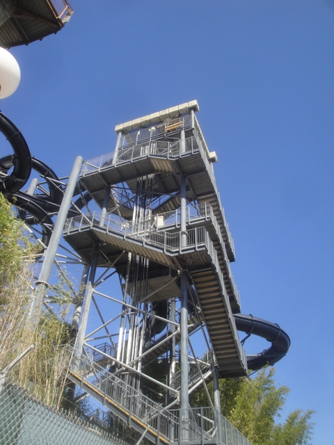
NO!!!! VENOM DROP IS GONE!!!! THAT WAS THE BEST SLIDE AT HURRICANE HARBOR!!!! ='(
Hey. It's like jumping the 70 ftr. Except landing on concrete instead of in a pool at 60 mph.
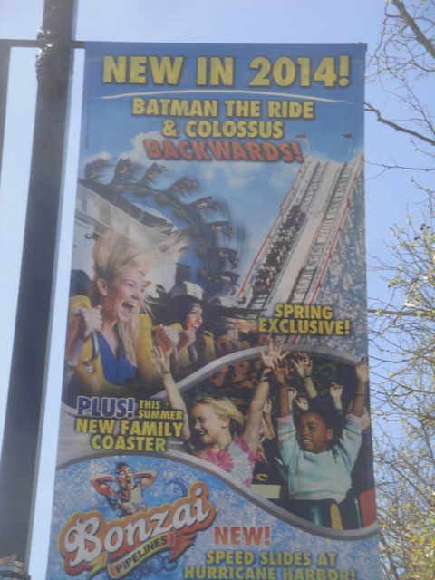
Bonzai Pipelines better be a suitable Venom Drop replacement. Judging from my Trap-door slide in Italy, it most likely will.
GOD DAMMIT!!! Now I gotta deal with the Season Pass line bullsh*t since I don't get free admission anymore (a Season Pass at SFMM's prices is pretty much the same thing though). And this was not a good day to do that. Unlike on most days, this line NEVER died down. Not even at 2 P.M!!!!
Grr. This explains all the disgusting hideous crowds. Hey kids, if you wanna learn Physics, go to the Cyber Cafe and check out MinutePhysics (Or better yet, check him out while you GO HOME!!!). Ok, so with horrible disgusting crowds like this, why are we here?
That's right. Batman Backwards is open for Season Pass holders this weekend and we're gonna ride it!! =)
Hey!! What happened to all those disgusting crowds I saw earlier!!?
SWEET!!!! Guess people are just here for Physics and not for Backwards Batman!! =) Ok, so how is Batman Backwards?
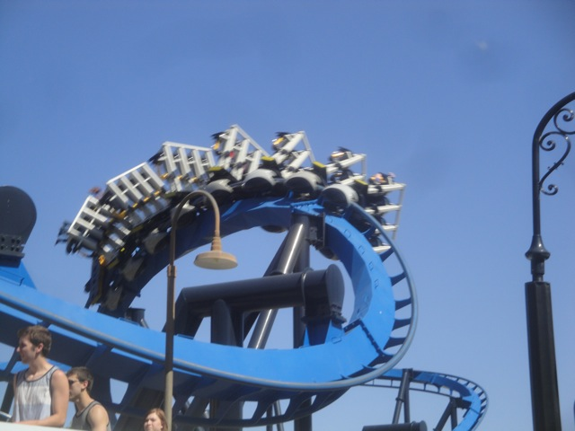
OH MY GOD!!! BACKWARDS BATMAN IS FREAKING AWESOME!!!! =)
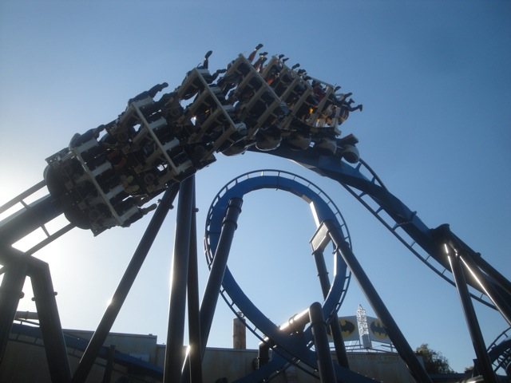
When riding Backwards in the front row, Batman is so good that it goes up a number in ranking to a 9/10. You gotta check it out while its still at Six Flags Magic Mountain.
 Luckily, Scream never has a long line, no matter how crowded the park is. So we're safe here.
Luckily, Scream never has a long line, no matter how crowded the park is. So we're safe here.
 What can I say? Scream was running very average today.
What can I say? Scream was running very average today.
 Thank you Riddlers Revenge Single Riders Line, for giving us something to ride.
Thank you Riddlers Revenge Single Riders Line, for giving us something to ride.
Not sure if this has been here for a while, or if they just did this in response to seeing just how stupid guests can be, but Ninja finally has a real fence, unlike its previous fence.
 That line for Viper is nauseating. Why are we here?
That line for Viper is nauseating. Why are we here?
Oh yeah. They tore down the giant tree entrance to Bugs Bunny World. And now that I'm not working at SFMM, I can tell you why they tore it down. The tree violated saftey standards. How? It was a breeding ground for all sorts of animals. The tree not only contained a MASSIVE beehive, but this was the place that racoons and skunks slept in. I was told that when they tore the tree down, there was this EXPLOSION of racoons just POPPING OUT!!!! Eew, glad its gone. And I'm glad I'm gone and can share this story with you without any fear. =)
In other news, Mooseburger Lodge got a makeover. And from the outside, it looks AWFUL!!! I mean, it looks bright and colorful. And it does NOT look good!!! It looks more like its trying to fit in with Full Throttle than the High Sierra Territory theme (soon, it'll be renamed ACTION BURGERS!!!).
Still no development on the credit whoring coaster (or whatever its name is).
Well at least the kiddy carousel looks slightly better.
Hey look. They moved the Tweety Cages. Gotta admit. I like the new sign.
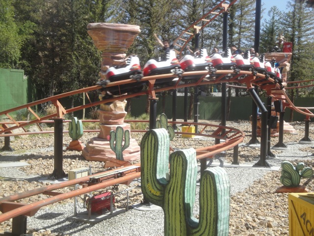
YAY!!! A ride with a tolerable wait time!!! Lets ride!!!
I love Vekoma Roller Skaters.
Good god!!! We go out for a long lunch and come back and THIS is the Fastpass line for Scream!!? We're really f*cked.
 Scream Shadow Shot.
Scream Shadow Shot.
Let's go ride the Vapor in Reverse!!!
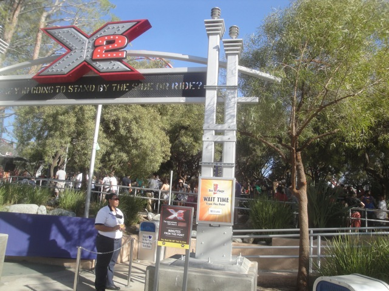
And of course, even X2's line is beyond our limit. This is normally the time to go home, but photography awaits.
On the one hand, they FINALLY updated these murals. ABOUT DAMN TIME!!! That's the good news. The bad news is that I prefer the old murals. Something about the paintings of the coasters really appealed to me. These are just the stock images that always appear on the parks website and on their brocures. So that's a bummer, but AT LEAST IT'S UPDATED!!!!
Unfortunetly, its not closed for the sake of removing unnecesarry OTSRs.
I do admit that I'm a fan of painting rides, and think Six Flags Magic Mountain really needs to do this to some of its coasters *cough* Scream and Tatsu *cough*. But when you do repaint a ride, please don't make it fugly. Thank you.
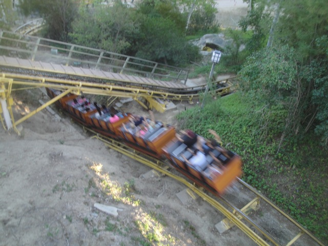
Oh look. Another ride with a short line that we haven't ridden in a while. Lets go!!
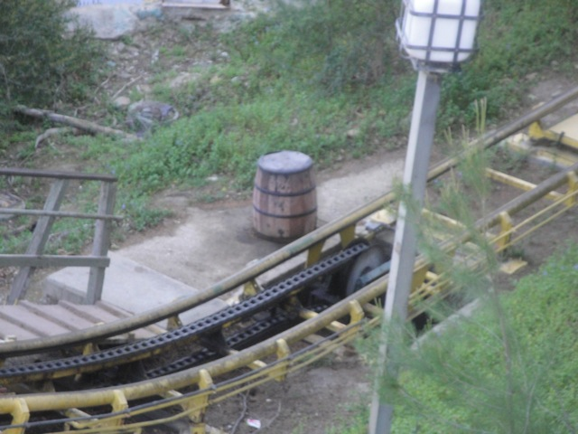
BARREL!!!! =)
 Love this shot of Full Throttle.
Love this shot of Full Throttle.
 Hmm. To ride Green Lantern or not?
Hmm. To ride Green Lantern or not?
Well, it has a single riders line. Lets see if its functional or not.
DAMMIT!!! NOT WORTH IT!!!
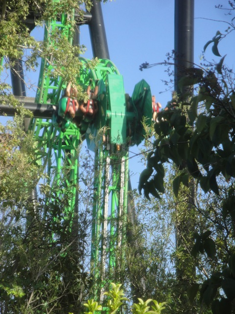
Bah. It doesn't even flip.
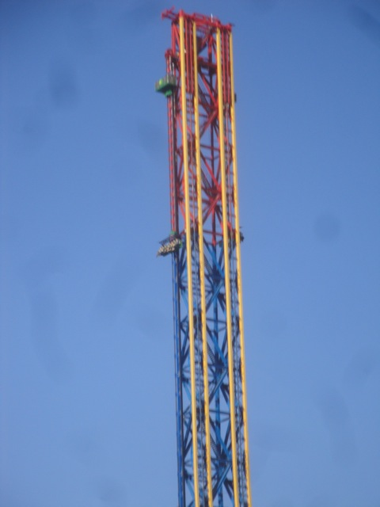
Lets hope that Lex Luthor's single riders line is more hidden.
Success!!! We got on a ride!!!
I'm not sure why, but Lex Luthor was running GREAT today!! Seriously, today had some the best rides on Lex Luthor ever!!
 GOD DAMN!!! Even Scream has a line. I guess we only got on it this moring thanks to RCT Syndrome.
GOD DAMN!!! Even Scream has a line. I guess we only got on it this moring thanks to RCT Syndrome.
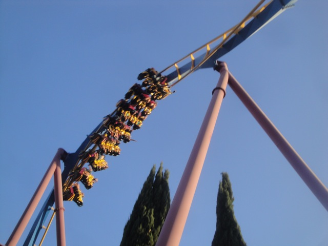
Love this shot of Scream's heartline roll.
 Love this shot on Ninja as well.
Love this shot on Ninja as well.
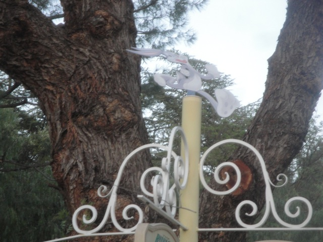
Quick Bugs!! Fix your posture before the Straw Nazi comes on by!!! =)
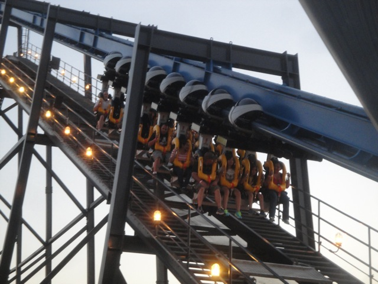
And finally, lets end the day with a marathon on Backwards Batman (because its awesome and apparently nobody here has a season pass).
 You seriously gotta get out here and ride Batman Backwards if you haven't already. Its that good.
You seriously gotta get out here and ride Batman Backwards if you haven't already. Its that good.
Home
|
{kind=link}